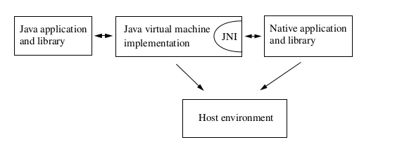
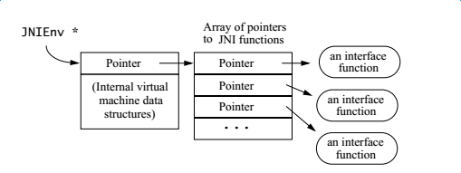

JNI Notes

文章目录
整理记录对JNI的认知过程。
JNI角色定位
JNI作为一种双向接口，即允许Java应用程序调用原生代码，也允许原生代码调用Java代码。

JNI数据结构和参数
JNI提供两种主要数据结构，”JavaVM“和”JNIEnv“，其本质上都是指向函数表指针的指针。
JavaVM
- JavaVM是JVM在JNI层的代表，JNI全局只有一个；JNIEnv是线程中的代表，每个线程都有一个，JNI中可能有多个JNIEnv。
- JavaVM提供执行接口函数，使用这些函数可以创建和销毁JavaVM。
JNIEnv
JNIEnv是线程相关的结构体，代表Java在本线程的运行环境。JNIEnv作用： - 调用Java函数:JNIEnv代表Java运行环境, 可以使用JNIEnv调用Java中的代码; - 操作Java对象:Java对象传入JNI层就是Jobject对象, 需要使用JNIEnv来操作这个Java对象; - JNIEnv提供大多数的JNI函数，作为native函数的第一个参数。第二个参数取决于native方法是否是静态，如果是非静态则是对对象的引用，如果是静态，则是对它class类的引用。 - JNIEnv接口指针，指向一个线程相关的结构，该结构包含了指向函数表的指针，函数表的每个入口包含一个指向JNI函数的指针。 - JNIEnv用于线程本地存储，因此不能在线程之间共享JNIEnv变量。如果一个线程无法获取它的JNIEnv参数，那么应该共享JavaVM参数，然后使用函数GetEnv获取线程的JNIEnv。
示意图

JNI函数表的组成就像是C++的虚函数表，虚拟机可以运行多张函数表。
Native方法的参数，总比Java函数声明多出两个,如(JNIEnv *, jobject, jstring); - 若原生函数不是静态函数，则第二个参数对应调用该原生函数的Java对象； - 如果该原生函数是静态函数，则第二个参数对应调用该原生函数的Java类。
JNI线程
Native代码执行在其调入的Java方法所在的调用栈中。
Native代码实在Native层实现的方法，调用栈从Java层开始直到Native，JNI不会改变调用栈，也不会改变线程环境，除非开发者指定改变。
在Native使用pthread开启新线程，又需要与Java层通信，需要先将线程attach到JNI环境，否则findClass都不会找到相应的类。attach本地创建的线程，会创建一个java.lang.Thread对象，并添加到主线程组中。已attach的线程上调用AttachCurrentThread是多余的。
步骤：
- 调用AttachCurrentThread将线程attach到JVM。已经attach的线程再调用AttachCurrentThread是多余的空操作。
- 在该线程中范文Java类、方法和对象，生成JVM的Global引用，即NewGlobalRef来保存引用。注意引用要及时删除，JVM中存放这些引用的表存在容量限制。
- 完成与Java的通信之后要调用DetachCurrentThread完成detach。
Android不会挂起正在执行本地代码的线程，如果当前垃圾回收器正在运行，或者调试器遇到问题需要挂起，Android在下次JNI调用时才会暂停线程。
jclass，jmethodID，jfieldID - 使用FindClass获取类，以及类的对象 - 使用GetFieldID获取属性、方法的ID - 使用GetIntField等合适的方法，或者对于属性、方法ID的值
类的引用、方法、属性ID在类卸载之前都是有效的。需要时应该调用NewGlobalRef保存jclass的引用。
版本兼容性
SDK开发时指定minsdk，targetsdk可以尽可能高。
NDK只能用一个android-target指定最低的版本要求，限制了在NDK中能使用的API范围。
最好保证NDK中的android-target与minsdk保持一致。在NDK中没有使用高版本API却指定了较高的targetsdk，编译时将链接到高版本的库，可能导致问题。
因为高版本的某些API实现方式会改变。比如signal.h中的signal函数，如果使用android-21编译，那么在低于5.0 版本的手机上是跑不起来，错误是无法找到signal函数，原因就是5.0以后signal.h中的signal函数的实现方式变了。
性能差异
native方法访问java方法，native方法访问native方法，java方法访问java方法
某译者粗略测试统计，
java-native调用比java-java方法慢2-3倍
native-java调用比java-java方法慢10倍
总结：如果不是有特别的需要，最好不要让native方法调用java方法，开销太大。然而访问java层的属性就没有这么大的区别，可以忽略不计。
程序错误检测
JNI不对空指针或非法参数类型等错误进行检测，因为： - 检查所有可能的错误会降低方法执行的性能 - 在很多时候，没有足够的运行时信息去进行检测
程序员不得传递一个非法指针或者错误的类型给JNI函数，否则可能会导致系统异常货虚拟机崩溃
Java异常
JNI允许本地方法抛出处理任何异常，也可以处理Java中抛出的异常，剩下没有处理的异常会继续给VM处理
异常和错误码
大多数情况下，JNI提供的方法通过返回错误码或者抛出java异常来处理错误，因此，程序中可以： - 检查JNI函数返回值 - 调用ExceptionOccurred()方法，获取方法中抛出的异常
有两种情况下，程序需要优先检测java异常而不是先检测返回码 - 通过JNI调用Java方法的时候，需要ExceptionOccurred()检测是否在Java方法中抛出了异常 - 一些访问数组的方法，它不返回错误码，但是会抛出ArrayIndexOutOfBoundsException 或者 ArrayStoreException异常
异常处理
有两种方法可以在本地方法中处理异常 - 检测到异常的时候立即返回，异常将会在调用该本地代码的地方抛出 - 在本地方法中调用ExceptionClear()清除异常，处理接下来的逻辑
异常抛出的时，本地方法需清除异常后，才能继续调用其他JNI接口方法，有异常发生后，只有以下方法才能被安全调用：
ExceptionOccurred()
ExceptionDescribe()
ExceptionClear()
ExceptionCheck()
ReleaseStringChars()
ReleaseStringUTFChars()
ReleaseStringCritical()
Release<Type>ArrayElements()
ReleasePrimitiveArrayCritical()
DeleteLocalRef()
DeleteGlobalRef()
DeleteWeakGlobalRef()
MonitorExit()
PushLocalFrame()
PopLocalFrame()
文章作者 sslyxhz
上次更新 2018-02-03